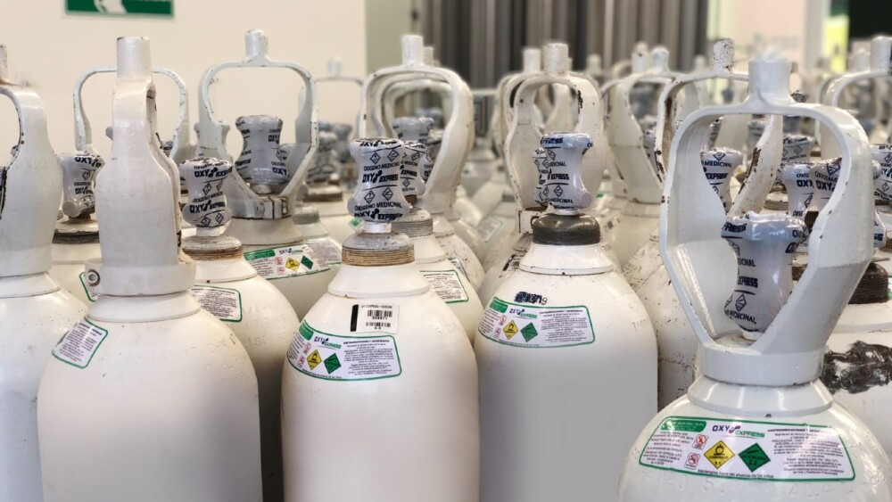

Los gases medicinales son ampliamente utilizados en los hospitales, ya sea en urgencias, en el quirófano, en la U.C.I., en planta o en las ambulancias. Hay una variedad de gases medicinales necesarios en la asistencia sanitaria: aire medicinal, dióxido de carbono (CO2), helio (He), óxido nitroso (N2O), nitrógeno (N2), monóxido de nitrógeno (NO), oxígeno (O2), xenón.
Para asegurar un suministro y distribución de los gases sin dificultad, se instalan instrumentos de medición en los tanques o cilindros de almacenamiento de gas, en los colectores de válvulas, en los controladores de presión y en los armarios de control de cierre, como reguladores secundarios en los sistemas de distribución de gas y en las estaciones de los usuarios. Para el control de vacío, se utilizan medidores de presión.
El concentrador de oxígeno es un recurso fundamental para las personas que sufren de enfermedades respiratorias crónicas, como la enfermedad pulmonar obstructiva crónica (EPOC), fibrosis pulmonar, asma severa y otras afecciones que afectan la capacidad pulmonar. Este dispositivo les proporciona un suministro constante de oxígeno, mejorando su capacidad para respirar, reduciendo la fatiga y permitiéndoles llevar una vida más activa y satisfactoria.